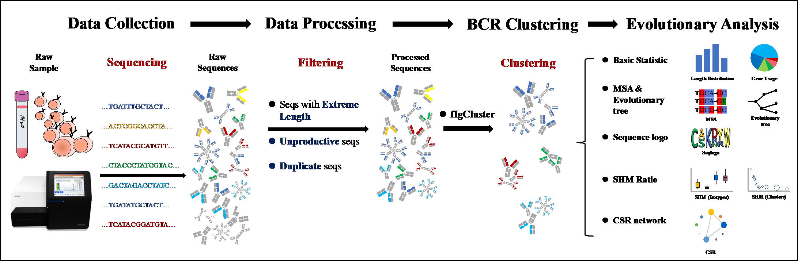
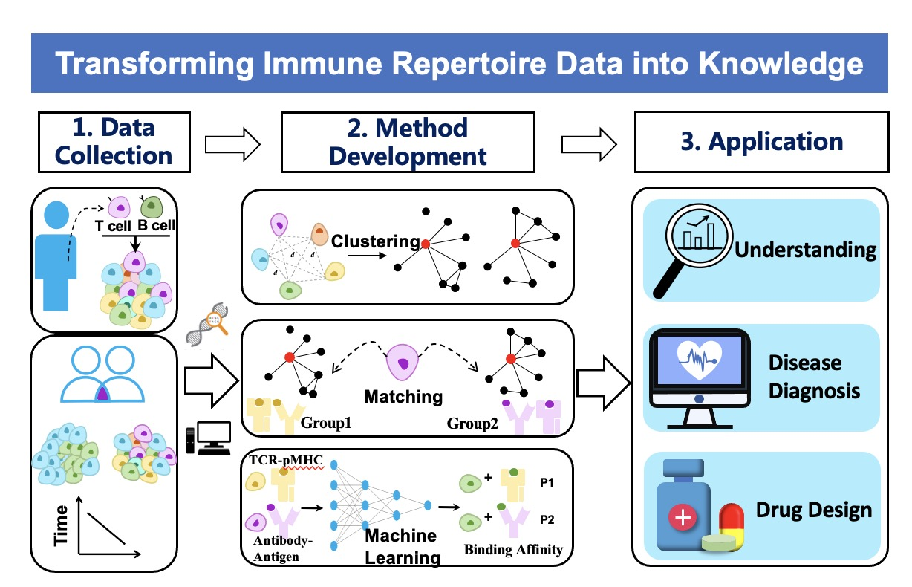
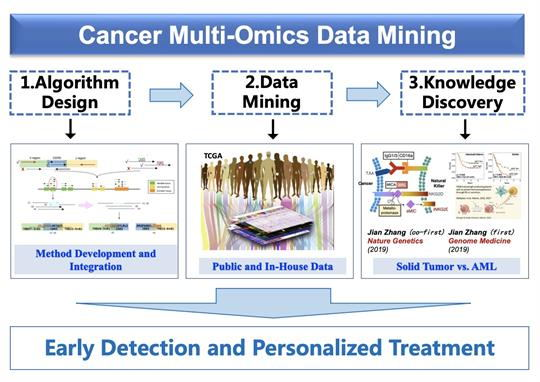

Dr. Zhang obtained his bachelor‘s degree of computer science and technology at Nankai University in 2013. He got his Ph.D. in bioinformatics at Academy of Military Medical Sciences, Beijing, China in 2018, under the supervision of Dr. Xiaomin Ying. From 2016 to 2018, as a Ph.D. visiting scholar, he worked with Dr. Xiaole Shirely Liu at Dana-Farber Cancer Institute and Harvard University. In 2020, Dr. Zhang joined Tianjin University as the Peiyang Young Scientist to continue his research on computational biology and bioinformatics. His group focus on developing bioinformatics methods and machine learning technologies for investigating high-throughput omics data to promote accurate diagnosis and personalized treatment of cancer and many other diseases.
You can find the paper here.
2022-08-05
They are both graduated form Medical College of Tianjin University with a major in intelligent medical engineering.
2022-08-01
You can find the paper here.
2022-04-01
We developed UcTCRdb (http://uctcrdb.cn/), which is a comprehensive database of unconventional T cell receptors (UcTCRs) with a user-friendly interface. UcTCRdb contains 598,758 unconventional TCR sequences systematically collected from 33 corresponding studies in human, mouse and cattle. Users can easily browse and download all the data and search for sequences of their interest. In addition, we offer users to analyze the datasets of interest individually, or by entering data, or by uploading data file for code-free analysis. This will facilitate the discovery of sequence patterns for users with different backgrounds. (Paper is under preparation)
 fIgCluster, a k-mer based method for fast Ig sequence clustering. To address the issue of clustering large-scale BCR sequencing data, we have developed fIgCluster, which is based on the combination of k-mers in BCR CDR3 region. It also provides functional modules for Ig cluster visualization and evolutionary analysis. fIgCluster is written in R, with continued updates for performance improvements and additional functionalities. (Paper is under preparation)
I am a co-developer of TRUST3, which extracts T/B cell receptor hypervariable CDR3 sequences from unselected tumor RNA-seq data. TRUST3 supports multiple RNA-seq aligners including Bowtie2, STAR, MapSplice2 etc. It also applies to both hg19 and hg38 human genome references. TRUST3 can run in parallel mode and uses GPU acceleration to increase computational efficiency. The source code, installation instructions, usage and related dataset are available at: bitbucket.org/liulab/trust/.
Computational Immunology
 T and B cells are the two cores of the adaptive immune system, and both express antigen-specific receptors at their surface, namely, T cell receptors (TCRs) and B cell receptors (BCRs). The broad diversity of TCR and BCR ensures that the adaptive immune system is capable of recognizing a vast array of antigens, including pathogens, auto-antigens, allergens, and tumor neoantigens. Thus profiling and characterizing those antigen-specific receptors has become an important part of basic and clinical immunology research. We are interested in developing computational technologies to investigate the link between TCR/BCR sequence and epitope binding specificity, and explore their potential for disease detection, drug design and monitoring the responses to therapy. We especially hope that our research work can further deepen the understanding of our immune system.
Cancer Multi-omics Data Mining
 The advent of omics technologies, such as genomics, epigenomics, transcriptomics and proteomics, have revolutionized medical research. The concept of “omics” refers to the fact that all or nearly all instances of the targeted molecular space are measured in the assay, and therefore they provide holistic views of the biological system. The efficient processing and analysis of the omics data, especially extracting and discovering patterns from these data, has brought many challenges to bioinformatics and computational biology.We are interested in developing computational methods to mine large-scale omics data to improve understanding of the causes and biological processes of diseases, especially in cancer, and to identify signatures and build models for early cancer detection and personalized treatment.
RECENT Publications
Effect of neoadjuvant chemotherapy on the immune microenvironment in gastric cancer as determined by multiplex immunofluorescence and T cell receptor repertoire analysis
Xing X#, Shi J#, Jia Y#, Dou Y#, Li Z#, Dong B, Guo T, Cheng X, Li X, Du H, Hu Y, Jia S*, Zhang J*, Li Z*, Ji J*
Immune receptor repertoires in pediatric and adult acute myeloid leukemia
Zhang J, Hu X, Wang J, Sahu A D, Cohen D, Song L, Ouyang Z, Fan J, Wang B, Fu J, Gu S, Sade-Feldman M, Hacohen N, Li W, Ying X*, Li B*, Liu X S*
Landscape of B cell immunity and related immune evasion in human cancers
Hu X#, Zhang J#, Wang J, Fu J, Li T, Zheng X, Wang B, Gu S, Jiang P, Fan J, Ying X, Zhang J, Carroll M C, Wucherpfennig K W, Hacohen N, Zhang F, Zhang P, Liu J S*, Li B*, Liu X S*